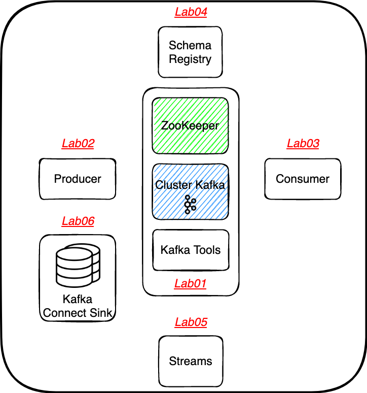

# Présentation et Installation
# Pré-requis
# Docker et Docker Compose
- Docker version 19.03.15 ou supérieure (MacOSX, Linux ou Windows 10).
- Docker Compose version 1.20.0 ou supérieure (MacOSX, Linux ou Windows 10).
Vous pouvez vérifier la version de Docker et de Docker Compose que vous avez installée avec les commandes suivantes à partir de votre terminal:
docker --version
docker-compose --version
L'installation de Docker pour Mac ou Windows installera également Docker Compose. Si Docker est déjà installé, vous devez vérifier que Docker Compose version 1.20.0 ou supérieure est installé. Sinon, nous vous recommandons d'installer une version plus récente de Docker.
# Java
Java 11 ou supérieure (MacOSX, Linux ou Windows 10).
Vous pouvez vérifier la version de Java que vous avez installée avec les commandes suivantes à partir de votre terminal:
java --version
# Un IDE "digne de ce nom"
- VSCode (opens new window) avec les plugins nécessaires pour executer et debugger une application Java / Spring Boot, pour plus d'informations: https://code.visualstudio.com/docs/languages/java (opens new window)
- Intellij (opens new window) correctement configuré pour executer et debugger une application Java / Spring Boot
# Hardware
Si possible, paramétrez un minimum de 2 GO de RAM dans docker afin de garantir une stabilité à l'ensemble de la stack.
# Setup
- ⚠️ Clone du repository GIT et checkout de la branche
step01⚠️.
git clone https://github.com/Zenika/nc-kafka-fundamentals && git checkout step01
- Setup de la stack docker
docker-compose up -d
- Pour vérifier que l'ensemble fonctionne:
docker-compose ps
Name Command State Ports
-----------------------------------------------------------------------------------------
akhq docker-entrypoint.sh ./akhq Up 0.0.0.0:8080->8080/tcp,:::8080->8080/tcp
kafka /etc/confluent/docker/run Up 0.0.0.0:9092->9092/tcp,:::9092->9092/tcp
tools bash -c echo Waiting for K ... Up 9092/tcp
zk /etc/confluent/docker/run Up 2181/tcp, 2888/tcp, 3888/tcp
Exposer les conteneurs au sein de votre OS en ajoutant dans votre fichier
/etc/hosts- OSX/Linux :
/etc/hosts(ouvrir en tant qu'administrateur) - Windows :
C:\Windows\System32\drivers\etc\hosts
- OSX/Linux :
127.0.0.1 akhq
127.0.0.1 kafka
127.0.0.1 schema-registry
127.0.0.1 connect
- Grace à cette exposition vous pouvez accéder aux différents conteneurs en utilisant les noms d'hôtes des conteneurs,
exemple:
http://akhq:8080/pour akhq ou précédemment vous y avez accéder avec l'urlhttp://localhost:8080/kafka:9092pour accéder à votre broker kafka- etc.
# Le petit mot de vos "speakers"
Adrien Wattez
Consultant & Formateur @ Zenika Rennes
Consultant & Formateur @ Zenika Rennes
# Un peu d'histoire et de contexte
- 2009 : début du projet (opensourcé par Linkedin)
- 2011 : première version publique
- 2012 : incubation par Apache
- 2014 : création de Confluent
Kafka est gratuit et open-source. Confluent vend des solutions d’hébergement (cloud et on-premise), des outils, du support et des formations.
C'est pourquoi nous utilisons des images confluentinc durant ce workshop : confluentinc/cp-zookeeper et confluentinc/cp-kafka.
# Sommaire
